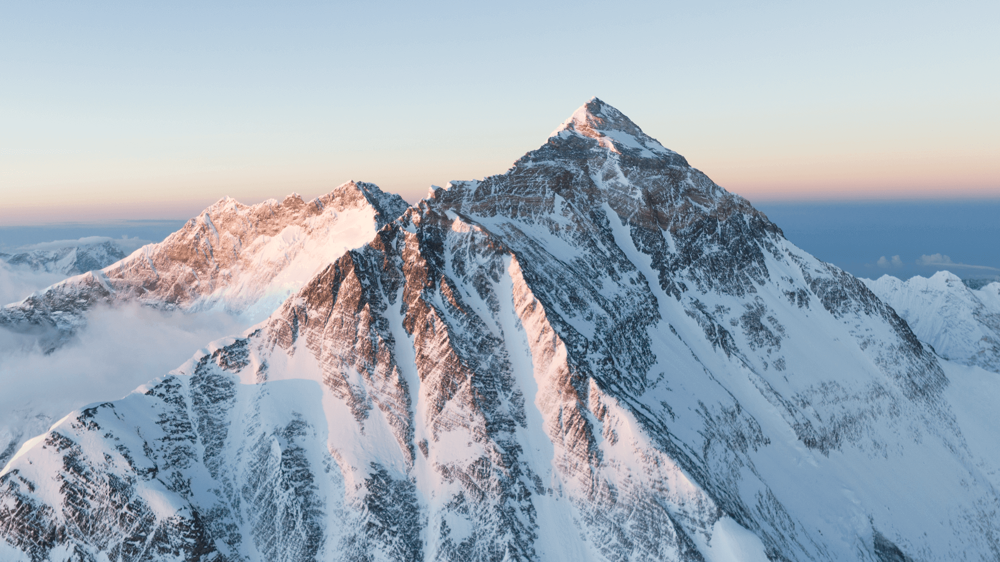
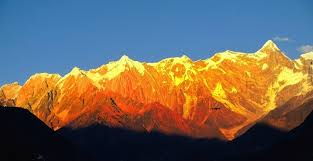
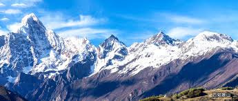

雪山摄影界的传奇
这些摄影师用数十年的时光，扎根雪域高原，用镜头诠释雪山的壮美与温柔，他们的作品成为雪山摄影的标杆。
李元 · 雪山摄影先驱
李元先生是国内雪山摄影领域的殿堂级人物，1958年出生于四川康定，自青年时期便痴迷于青藏高原的雪山风光。他深耕雪山摄影40余年，足迹遍布喜马拉雅山脉、横断山脉的每一座知名雪峰，累计拍摄超过10万张雪山作品。
摄影理念：“雪山不是冰冷的石头，而是有生命的，镜头要捕捉的不是山的形状，而是山的呼吸。”
他的作品摒弃过度后期，以最真实的光影还原雪山本貌，曾获“中国自然摄影终身成就奖”，出版《雪域山河》《雪山纪行》等多部摄影集，是无数雪山摄影爱好者的精神导师。
李元大师代表作品

《珠峰日出》· 1998年拍摄于珠峰大本营
这是李元大师的经典之作，用中焦镜头捕捉到珠峰日出时，光影在雪坡上流动的瞬间，被誉为“最具温度的珠峰影像”。

《南迦巴瓦 · 羞女峰》· 2005年拍摄于西藏林芝
耗时半个月等待，终于捕捉到南迦巴瓦峰全貌展露的瞬间，云雾缭绕的山峰与雅鲁藏布江相映，成为藏地摄影的经典画面。

《四姑娘山 · 四季》· 2012年拍摄于四川阿坝
历时一年，记录四姑娘山春夏秋冬的不同样貌，四张照片拼接出雪山的四季轮回，展现出极致的自然韵律。